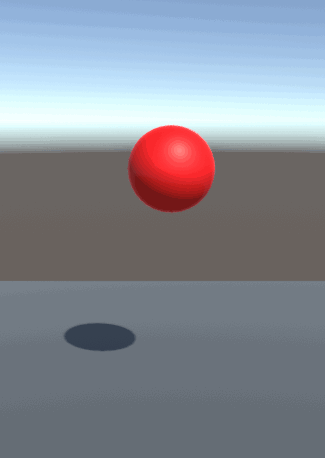

Animate Transform
Introduction
This behavior animates a game object by changing its position, rotation and scale over time until it matches those of a "transform provider" game object. It is possible to set how position, rotation and scale are animated over time through separate animation curves.
The behavior can be found under Animation > Animate Transform.

Inspector

The Animate Transform behavior accepts the following parameters.
Object: The game object to be moved.
Final transform provider: The game object which provides the final position, rotation and scale of the animation.
Duration (in seconds): Duration in seconds of the animation.
Position curve, Rotation curve, Scale curve: These animation curves determine the object's transform at a given point in time. The curve can have values from 0 (the object's original position, rotation or scale) to 1 (the transform provider's position, rotation or scale). Note that the length of the curves is normalized: while it is possible to have the time axis greater or lesser than 1, this won't affect the duration of the animation - it is recommended to leave the time axis to the default length of 0 to 1.
Ping pong: If this is checked, the animation will play backwards after finishing, resulting in the object animating and then returning to the original position. Note the total duration will be twice the value in the Duration field. This is similar to creating a symmetrical velocity curve, like for example a bell shape.
Repeats: The number of times the animation will repeat. Note that each repeat will increase the duration of the animation by its full amount. If ping pong is set, it will be included in every repeat.